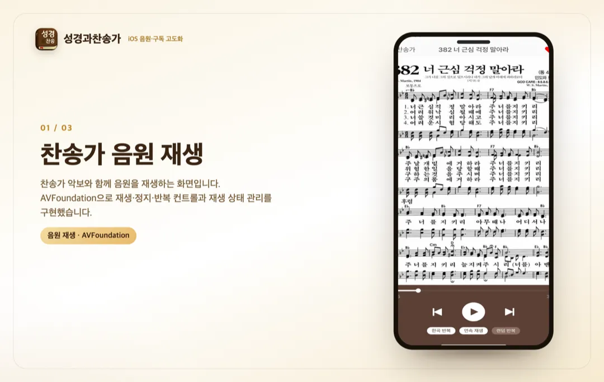
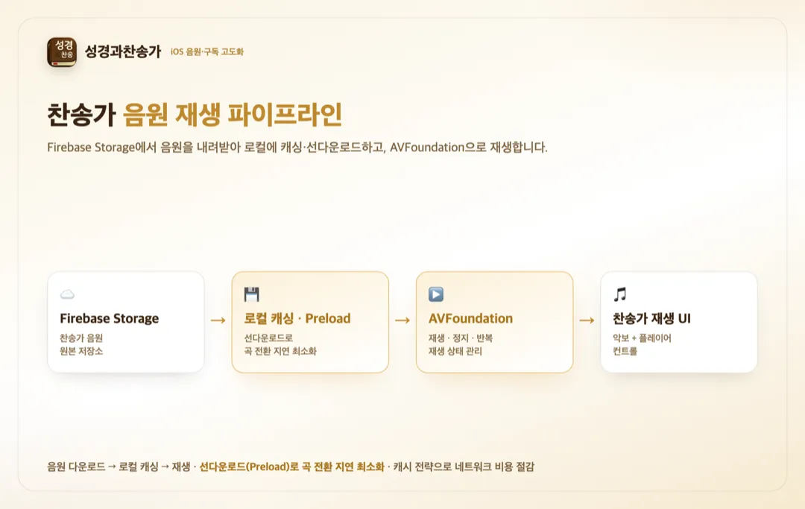
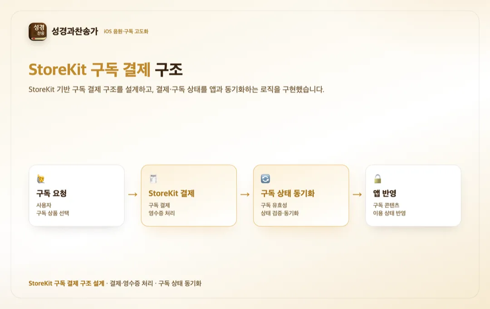

홈 / 포트폴리오 / 스마트 성경과찬송가 — 음원 구독
유지보수·전환
성경·찬송가 앱 iOS 인앱결제(구독)·음원 재생 고도화
참여 기간 · 2024.07 ~ 2024.08



포트폴리오 소개
- 운영 중인 성경·찬송가 앱에서 iOS 인앱결제(StoreKit 구독)와 찬송가 음원 재생 기능을 고도화했습니다.
- 찬송가 음원을 Firebase Storage에서 내려받아 로컬에 캐싱하고 재생하는 파이프라인을 설계하고, AVFoundation으로 재생·컨트롤과 상태 관리를 구현했습니다.
작업 범위
- StoreKit 기반 구독 결제 구조 설계 및 구독 상태 동기화
- Firebase Storage 음원 다운로드 → 로컬 캐싱 → 재생 파이프라인 설계
- 선다운로드(Preload) 구조로 곡 전환 시 지연 최소화
- 캐시 전략으로 네트워크 비용·재생 지연 최적화
- AVFoundation 기반 오디오 재생 상태 관리·컨트롤 UI 아키텍처 설계
주요 업무 및 기능
- 음원 재생: AVFoundation으로 찬송가 재생·정지·반복 등 컨트롤과 재생 상태 관리
- 음원 파이프라인: Firebase Storage 다운로드 → 로컬 캐싱 → 재생, 선다운로드로 곡 전환 지연 최소화
- 최적화: 캐시 전략으로 반복 재생 시 네트워크 비용·지연 절감
- 구독 결제: StoreKit 구독 결제 구조와 구독 상태 동기화
주안점
- 곡 전환 지연을 줄이는 선다운로드(Preload)와 캐시 전략
- 오디오 재생 상태의 정확한 관리와 컨트롤 UI 일관성
- 구독 결제와 구독 상태의 신뢰성 있는 동기화
문제점
- 찬송가 음원을 매번 네트워크에서 받으면 곡 전환이 느리고 데이터 비용이 컸습니다.
- 오디오 재생 상태(재생·정지·반복)를 일관되게 관리할 구조가 필요했습니다.
- 구독 결제와 구독 상태를 신뢰성 있게 동기화해야 했습니다.
프로젝트 목표
- 음원을 로컬에 캐싱하고 선다운로드(Preload)해 곡 전환 지연을 최소화.
- AVFoundation으로 재생·컨트롤과 상태 관리를 견고하게 구현.
- StoreKit 구독 결제 구조와 구독 상태 동기화를 구현.
주안점
- 선다운로드·캐시 전략으로 재생 지연·네트워크 비용 최적화.
- 오디오 재생 상태 관리와 컨트롤 UI 일관성.
- 구독 결제 상태 동기화의 신뢰성.
프로젝트 성과
찬송가 음원 재생·컨트롤 구현
AVFoundation으로 찬송가 음원 재생과 재생·반복 컨트롤 UI를 구현하고, 오디오 재생 상태 관리 아키텍처를 설계했습니다.
음원 캐싱·선다운로드 최적화
Firebase Storage 음원의 다운로드-로컬 캐싱-재생 파이프라인을 설계하고, 선다운로드로 곡 전환 지연을 최소화했습니다.
StoreKit 구독 결제 구현
StoreKit 기반 구독 결제 구조를 설계하고 구독 상태 동기화 로직을 구현했습니다.
비슷한 프로젝트를 계획 중이신가요? 아이디어 단계여도 괜찮습니다.
프로젝트 문의하기 →